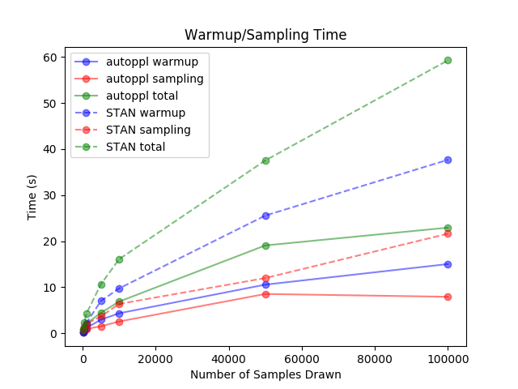
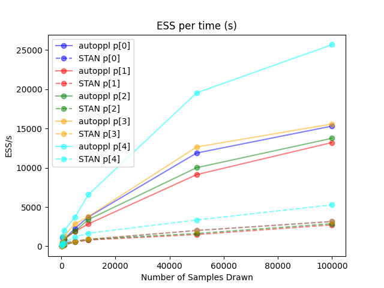
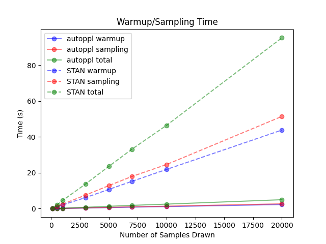
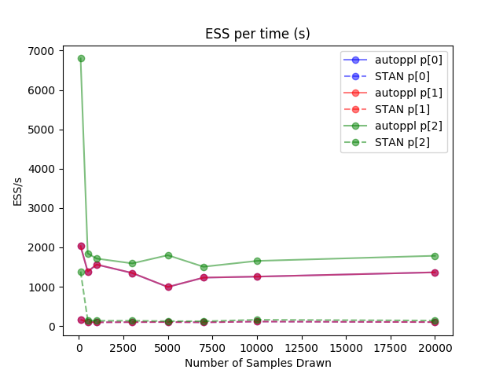

Table of Contents
Overview
AutoPPL is a C++ template library providing high-level support for probabilistic programming. Using operator overloading and expression templates, AutoPPL provides a generic framework for specifying probabilistic models and applying inference algorithms.
The library is still at an experimental stage.
Who should use AutoPPL?
The goal of this project is to provide a framework for practitioners, students, and researchers. It is often desired to have a framework for specifying a probabilistic model separate from any inference algorithms. While AutoPPL does provide a few inference algorithms such as NUTS and Metropolis-Hastings, it allows users to write their own sampling algorithms and even add new distributions.
How is AutoPPL different from existing PPLs like STAN and PyMC3?
AutoPPL can be thought of as a hybrid of STAN and PyMC3. It is similar to STAN in that it is extremely optimized for high performance (see Benchmarks) and it uses much of the same logic discussed in the STAN reference guide. It is similar to PyMC3 in that it is a library rather than a separate domain-specific language.
However, it is unique in that it is purely a C++ library. While STAN requires the user to write STAN code, which gets translated into C++ code by the STAN compiler and then compiled into a binary, AutoPPL just requires the user to directly write C++ code. Some benefits include the following:
- eliminates the extra layer of abstraction to a separate domain-specific language
- users can use native C++ tools to clean and prepare data, and also examine the posterior samples
- easily extend the library such as adding new distributions or a sampling algorithm
In the future, we plan to provide Python and R bindings such that the user can write a C++ function using AutoPPL that defines and samples from the model and export the Python/R binding to examine the posterior samples using a more comfortable, scripting language.
Design Choices
Intuitive Model Specification
In Bayesian statistics, the first step in performing probabilistic inference is to specify a generative model for the data of interest. For example, in mathematical notation, a Gaussian model could look like the following:
Given its simplicity and expressiveness, we wanted to mimic this compact notation as much as possible for users of our library. For the model specified above, the code in AutoPPL could look like the following:
Efficient Memory Usage
We make the assumption that users are able to specify the probabilistic model at compile-time. As a result, AutoPPL can construct all model expressions at compile-time simply from the type information. A model object makes no heap-allocations (with the exception of ppl::for_each) and is minimal in size. It is simply a small, contiguous slab of memory representing the binary tree. The model object in the previous section is about 88 bytes on x86_64-apple-darwin17.7.0 using clang-11.0.3.
For a more complicated model such as the following:
The size of the model is 440 bytes on the same machine and compiler.
A model expression simply references the variables used in the expression such as theta[0], theta[1], ..., theta[5], X, i.e. it does not copy any data or values.
High-performance Inference Methods
Users interface with the inference methods via model expressions and other configuration parameters for that particular method. Hence, the inference algorithms are completely general and work with any model so long as the model expression is properly constructed. Due to the statically-known model specification, algorithms have opportunities to make compile-time optimizations. See Benchmarks for performance comparisons with STAN.
We were largely inspired by STAN and followed their reference and also their implementation to compute ESS, perform adaptations, and stabilize sampling algorithms. However, our library works very differently underneath, especially with automatic differentiation and handling model expressions.
Installation
First, clone the repository:
The following are the dependencies:
We provide a shell script for Mac and Linux that automatically installs these libraries locally in lib:
Since AutoPPL is a template library, there is nothing to build! Just pass the compiler flag -I<path> when building your program to include the path to include inside cloned directory, include to Eigen3.3, and include to FastAD. If you ran ./setup.sh, the paths for the latter two are lib/FastAD/libs/eigen-3.3.7/build/include and lib/FastAD/build/include (relative to cloned directory).
For CMake users, they can follow these steps:
This will simply set the CMake variable CMAKE_INSTALL_PREFIX to the build directory and won't build anything. If you want to install AutoPPL into the system, remove -DCMAKE_INSTALL_PREFIX=... The make install will install the include directory and CMake shared files in build directory.
In your own CMake project, assuming you have a single source file main.cpp in the same directory as your CMakeLists.txt, write the following as a minimal configuration:
If you installed AutoPPL locally as instructed before, you should add a hint to the find_package like:
The above rule applies for FastAD and Eigen3 as well. If you installed these libraries using setup.sh locally, the required hint paths are:
Quick Guide
We assume that we are in namespace ppl throughout this section.
Variable
There are only a few variable types that a user will need to define a model.
For all types listed above, ValueType should be either double or int, and ShapeType must be one of scl, vec, mat (scalar, column vector, matrix) to indicate the general shape. By default, ShapeType is scl. Depending on the shape, the user may omit rows or cols. For example, if ShapeType is scl, one can omit both rows and cols (both set to 1), and if ShapeType is vec, one can omit cols (set to 1). For Param specifically, see Constraint for more information about ConstraintType. For this section, this third template parameter is not important.
The difference between DataView and Data is that DataView only views existing data (does not copy any data) and Data owns data. DataView will view data in column major format and Data will own data in column major format. To get the underlying data that DataView views or Data owns, we expose the member function get, which will return a reference to Eigen::Map or Eigen::Matrix, respectively. We ask the users to refer to Eigen documentation for modifying the data.
Param and TParam objects do not own or view any values. There is nothing to do from the user other than constructing them. More details on their distinction will become clearer in the later sections. At a high level, a Param is a parameter that can be sampled and a TParam is a transformation of parameters and is not sampled.
It is worth mentioning that currently TParam<T, vec> objects are the only ones that provide subsetting, i.e. have operator[] defined. There should be no need with Data or DataView since one can subset the underlying Eigen object itself and create a new Data or DataView object to own a copy of or view that subset. Note that tp[i] returns another expression and does not actually retrieve any value; it is simply a lightweight object that refers to tp and the ith value it represents. Users should not concern themselves how tp actually binds to values during MCMC.
Variable Expression
Variable expressions are any expressions that are "mathematical" functions of variables. We provide overloads for operator+,-,*,/,+=,-=,*=,/=,=, functions such as sin, cos, tan, log, exp, sqrt, dot, for_each. All functions are vectorized whenever possible. Here is an example:
The expression above first creates an expression for the dot-product, then a vectorized sum with a scalar (s), then a vectorized sin, then finally vectorized operator- with w2.
The only non-obvious function is for_each. It has the same syntax as std::for_each, however, the lambda function must return some variable expression:
Note that we provide our own counting_iterator since they become quite useful in this context. One can think of this expression as a "lazy-version" of the following:
assuming h in this context is, for example, std::vector<double>. Again, nothing is computed when the expression is constructed. All computation is done lazily during MCMC sampling.
Finally, users can create constants by writing literals directly, as shown above, when constructing variable expressions. If the user wishes to create a constant vector or matrix, they can simply use those objects when constructing the variable expression and our library will wrap them as constant objects. The difference between constants and data is that constants cannot be assigned a distribution.
Constraint
This section only applies to Param objects. Sometimes, parameters must be constrained. Some notable examples are covariance matrix (symmetric and positive definite), probability values (bounded by 0 and 1), and standard deviation (bounded below by 0). It is a well-known problem that sampling constrained parameters directly is highly-inefficient.
Every parameter has an associated unconstrained and constrained value. Most MCMC algorithms like NUTS and Metropolis-Hastings will sample unconstrained values, and transform the unconstrained values to constrained values when computing the log-pdf (corrected with the Jacobian). For more information on how these transformations are performed, we direct the readers to look at STAN reference guide. Note that users will always receive constrained values as their samples after invoking a MCMC sampler.
Currently we only support lower bounds, lower-and-upper bounds, (symmetric) positive-definite, and no constraint. We recommend using C++17 class template argument deduction (CTAD) instead of auto to indicate that these objects are indeed parameters, but of course, one can certainly just use auto:
From section Variable, we saw that Param had a third template parameter. Using the make_param helper function, we can deduce that third parameter type, which is precisely the constraint argument to make_param. In general, the constraint can be a complicated expression depending on other parameters as such:
so it is crucial that we are able to deduce the type.
Distribution Expression
A distribution expression internally defines how to compute the log-pdf (dropping any constants). Currently we support the following distributions:
| Distribution | Syntax |
|---|---|
| Bernoulli | ppl::bernoulli(p) |
| Cauchy | ppl::cauchy(x0, gamma) |
| Normal | ppl::normal(mu, sigma) |
| Multivariate Normal | ppl::normal(mu, Sigma) |
| Uniform | ppl::uniform(min, max) |
| Wishart | ppl::wishart(V, n) |
Here are some examples:
Model Expression
There are two operators that govern model expressions: operator|= and operator,. operator|= assigns a distribution to a parameter or data and operator, "glues" such assignments together, defining a joint distribution. The choice for operator|= is deliberate because it captures both the intuition that we are assigning a distribution to a variable and that the distribution is conditional (|).
Example:
Transformed Parameters
There are cases where defining a model expression is not enough. Sometimes parameters have to be further transformed to cache some common transformation. For example, here is a stochastic volatility model taken from STAN, but using AutoPPL:
A couple of notes:
- transformed parameter expression must be defined as a separate expression from model expression
- it is more efficient to make a transformed parameter expression if there is a common transformation used in multiple places when defining a model expression
all variable expressions are perfectly valid when defining TP expressions, but note that
operator=is only available forTParamobjects. In fact, allTParamobjects that are used in a model expression must have exactly oneoperator=expression assigning some expression to thatTParamobject. The user cannot assign a vectorTParamwith some expression and then also assign a subview again like:h = h_std * sigma,h[0] = 1.because this introduces ambiguity when back-evaluating during automatic differentiation. However, it is fine to assign each subview exactly once like:
for_each(util::counting_iterator<>(0),util::counting_iterator<>(h.size),[&](size_t i) { return h[i] = h_std[i] * sigma; });- it is possible to assign a
TParamwith an expression composed of only data and constants, but this is much less efficient than precomputing that expression and creating a new constant out of that. This precomputation only requires using Eigen library and should not be a part of any autoppl expressions.
Program Expression
A program expression simply combines a transformed parameter expression with a model expression. If there is no transformed parameter expression, then a program expression simply wraps a model expression. A program expression is what gets passed to MCMC samplers. The user does not need to convert a model expression into a program expression, but if there is a transformed parameter expression, the user should use operator| to "pipe" transformed parameter expression with a model expression to create a program expression (order matters! The wrong order will raise a compiler error):
Sampling Algorithms
Currently, we support the following algorithms:
| MCMC Algorithm | Syntax |
|---|---|
| Metropolis-Hastings | ppl::mh(program, config) |
| No-U-Turn Sampler (NUTS) | ppl::nuts(program, config) |
Every sampling algorithm has a corresponding configuration object associated with it. The user does not need to pass a configuration, in which case, a default-constructed object gets passed with the default settings.
We briefly list the configuration declaration:
For the NUTS-specific configuration, we direct the reader to STAN.
Every sampler will return a ppl::MCMCResult<> object. The template parameter indicates the row or column-major for the underlying sample matrix. The sampler may choose to sample the unconstrained values and write in a row-major result object for speed purposes and then convert to a column-major result object with constrained values. We briefly show the class declaration:
The sample matrices will always be samples x n_constrained_values, where samples is the number of samples requested from the config object and n_constrained_values is the number of constrained parameter values (flattened into a row). The algorithms guarantee that each row consists of sampled parameter values in the same order as the priors in the model. As an example, for the following model
a sample row would consist of values for t1, t2, t3 in that order. If the parameters are multi-dimensional, their values are flattened assuming column-major format. So if t1 is a vector with 4 elements, the first four elements of a row will be values for t1. If t2 is a 2x2 matrix, the next four elements of a row will be values for t2(0,0), t2(1,0), t2(0,1), t2(1,1).
Currently, we do not support a summary function yet to output a summary of the samples. The user can, however, directly call res.cont_samples.colwise().mean() to compute the mean for each column. We also provide ppl::math::ess(matrix) to compute column-wise effective-sample-size (ESS). The user can then divide this result with res.sampling_time to get ESS/s, which is the preferred metric to compare performance among MCMC algorithms. ESS was computed as outlined here. We also made some adjustments to use Geyer's biased estimator for ESS as in the current implementation of STAN (source).
Examples
Sampling from Joint Distribution
Although AutoPPL was designed to perform inference on posterior distributions, one can certainly use it to sample from any joint distribution defined by the priors and conditional distributions. For example, we can sample 1000 points with 1000 warmup iterations from a standard normal distribution using Metropolis-Hastings in the following way:
In general, so long as the joint PDF is known, or equivalently and more commonly if the conditional and prior PDFs are known, one can sample from the distribution. As another example, we may sample from a more complicated joint distribution:
Sampling Posterior Mean and Standard Deviation
The following is an example of fitting a Gaussian model to some data. We put a Normal(0,3) prior on the mean and Uniform(0,2) prior on the standard deviation. While in the previous section, we used Metropolis-Hastings to demonstrate how to use it, it is recommended to use the state-of-the-art NUTS sampler to sample from the posterior distribution.
Bayesian Linear Regression
This example covers ridge regression in a Bayesian setting. We created a fictitious dataset consisting of (x,y) coordinates. The true relationship is the following: y = x + 1. By specifying two parameters for the weight and bias, we propose the following probabilistic model:
In AutoPPL, we can write the following code and sample from the posterior:
Stochastic Volatility
This example was discussed in a previous section, but we mention it again as reference:
Benchmarks
In the following examples, we show benchmarks with STAN.
We list the benchmark settings for completion:
- Machine: x86_64-apple-darwin19.5.0
- CPU: 3.4 GHz Quad-Core Intel Core i5
- Compiler: Clang 11.0.3
Bayesian Linear Regression <a name="benchmarks-bayesian-linear-regression"></a>
We collected a dataset regarding life expectancy released by WHO (source). After cleaning and extracting three predictors: "Alcohol", "HIV/AIDS", and "GDP", the dataset consisted of 157 points. We performed a Bayesian linear regression with this data and the following model:
where w is a 3-dimensional parameter vector, and b and s are scalar parameters.
Using the same dataset and model specification, we performed NUTS to sample various number of samples. We also set the number of chains and cores to 1 and adaptation method to diagonal precision matrix.
The following plots show benchmarks between run-times and effective sample size (ESS) per second:
 
The reported mean, standard deviation, and ESS values were almost identical in all cases, which is not surprising since we used the same algorithm to estimate ESS and perform NUTS.
The runtimes have similar log-like behavior, but it is clear that STAN (dotted lines) takes far longer in both sampling and warmup times by a factor of about 6.5-7. As for ESS/s, upon comparing by colors (corresponding to a parameter) between dotted (STAN) and solid (AutoPPL) lines, we see that AutoPPL has uniformly larger ESS/s by a factor of 6.5-7 as well. This difference quickly becomes more noticeable as sample size grows. From these plots and that sampling results were identical show that the drastic difference in ESS/s is simply from faster automatic differentation and a good use of memory to take advantage of cache.
The following is the AutoPPL code for the model specification without data loading. The full code can be found here:
Gaussian Model
We generated 1000 values from standard normal distribution to form our data. Our model is defined as follows:
where all parameters are scalar. The benchmark configurations are exactly the same as in the previous section. The following plots show benchmarks between run-times and effective sample size (ESS) per second:
 
We note that both STAN and AutoPPL outputted almost identical means, standard deviation, and ESS.
The runtimes have a similar linear trend, and it is clear that STAN (dotted lines) takes far longer in both sampling and warmup times. Comparing the sampling times, for example, we see about 20 times improvement. The ESS/s for l1 and l2 overlap completely (red and blue) in both STAN and AutoPPL and this is expected since they are symmetric in the model specification. With the exception of the two smallest sample sizes (100, 500), ESS/s is fairly constant as sample size varies. It is quite evident that AutoPPL (solid) has a larger ESS/s by a factor of 20.
The reason for this difference is in how we handle expressions where data vector elements are iid (independent and identically distributed). For most distributions, especially those that are in some exponential family, they can be highly optimized in iid settings to perform quicker differentiation. However, it is worth noting that this optimization does not apply when the data are simply independent but not identically distributed (as in the linear regression case), or when the variable is a parameter, not data. Nonetheless, our AD is extremely fast due to vectorization and is in general faster than STAN.
The following is the AutoPPL code without data generation. The full code can be found here.
Contributors
 Jacob Austin Jacob Austin💻 🎨 📖 |  Jenny Chen Jenny Chen💻 🎨 |  lucieleblanc lucieleblanc💻 🎨 |  Matt Ludkin Matt Ludkin💻 |
Third Party Tools
Many thanks to the following third party tools used in this project:
- Clang: one of the main compilers used.
- CMake: build system.
- Coveralls: check test coverage.
- Cpp Coveralls: check test coverage specifically for C++ code.
- Eigen: matrix library.
- FastAD: automatic differentiation library.
- GCC: one of the main compilers used.
- Google Benchmark: benchmark library algorithms.
- GoogleTest: unit/integration-tests.
- Travis CI: continuous integration for Linux using GCC.
- Valgrind: check memory leak and errors.